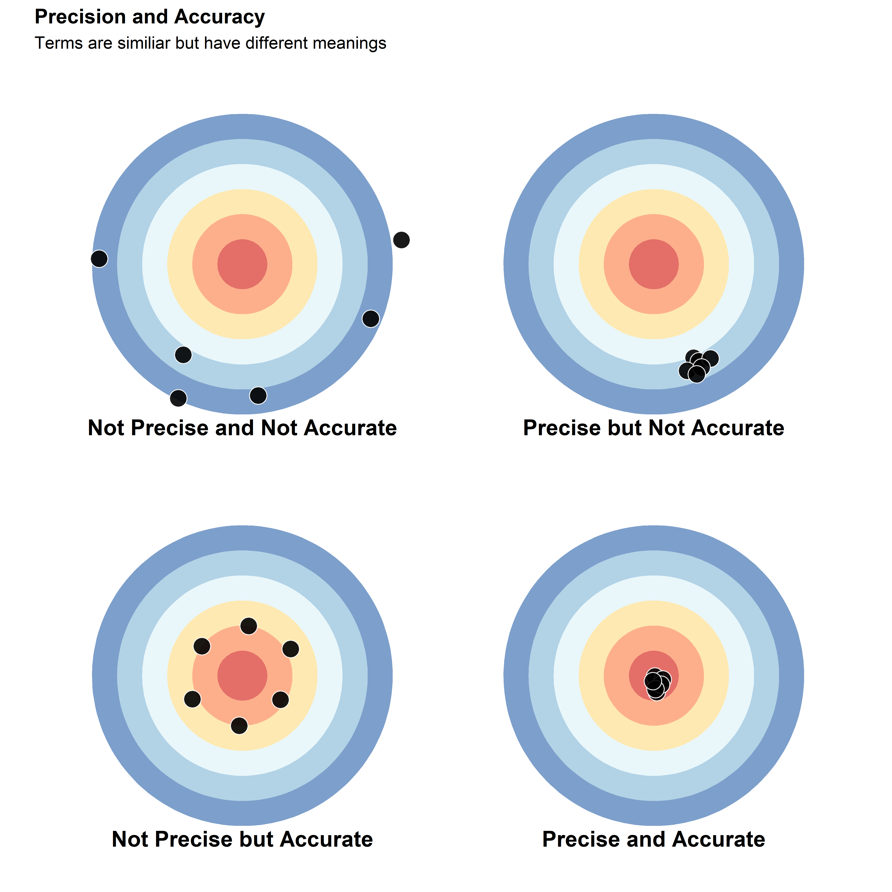
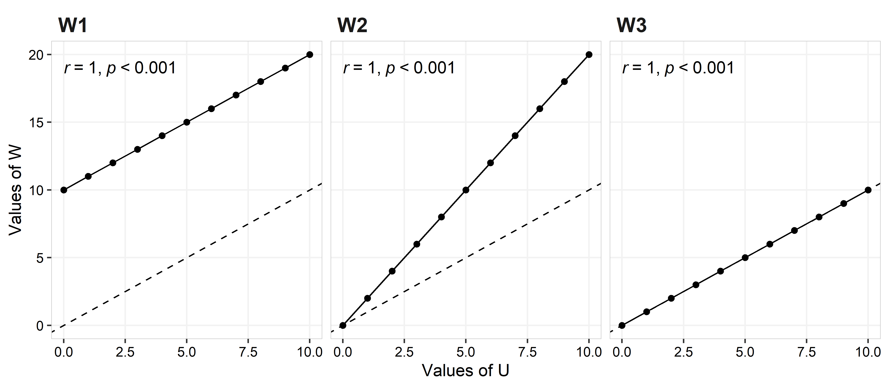
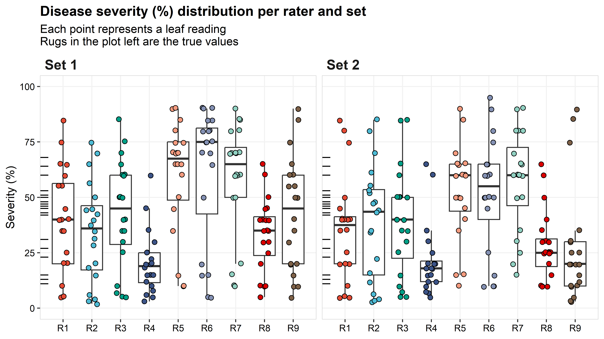
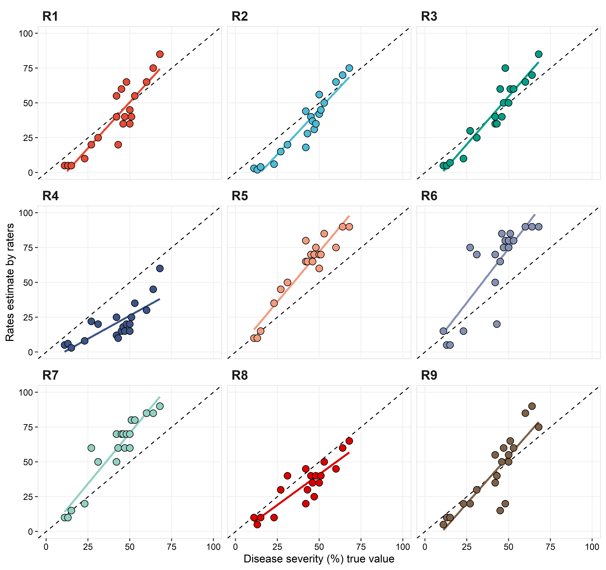

Disease assessment - accuarcy and precision
Paul Esker; Felipe Dalla Lana; Mladen Cucak
1/28/2022
Introduction
This is the lab section of the class of disease assessment. In this document you will learn some analyses on how to quantify precision and reliability when measuring disease intensity. We will use R for this activity and data are provided from nine raters unfamiliar with the disease that was used. Each rater measured foliar disease severity of 20 trifoliate leaves, with a shape similar to peanuts or soybean. Leaves used in this exercise were generated by the software Severity.Pro, developed by Nutter et al. Raters measured the disease severity on their computers, with each leaf being measure twice in two different randomly assigned sets.
Precision and Accuracy
Precision, or reliability, measures the similarity between ratings (multiple measurements, different raters) from the same specimens (e.g. foliar disease severity).
Accuracy is defined as the “closesness” of the measured value to the true value.
In the figure below, there are four plots that illustrate the difference between precision and accuracy. Considering the center of the target as the true value, the plot in the top-left shows measurements that are neither precise nor accurate, with high variation and far from the true value. This situation is very problematic, since there is high uncertainty and the final measurements do not represent the “real” value.
The plot on the top-right shows a scenario where there is a good precision, meaning that all values were close to one another, but also where these values were all relatively far from the true value.
In the bottom-left, the measurements are, on average, accurate, but they are not precise. While this scenario will report a value (i.e., mean) close to the true value, there is still a high degree of variability in the measurements, which may cause issues in subsequent statistical analyses.
The final scenario shown in the bottom-right plot is the ideal situation, where the measurements are both precise and accurate. It is important to point that the “real” value is more conceptual than achievable. In general, “true” values are measurements obtained from other methods, which are also called the “gold standard”. These values can be obtained through methods such as image-analysis.
library(tidyverse)
library(patchwork)
library(knitr)
library(kableExtra)
library(ggsci)
library(ggpubr)
data_acc = data.frame(
var = letters[1:6],
value = rep(10,6))
not_prec_not_acc =
ggplot(data_acc, aes(x = var, y = value ,fill = var )) +
geom_bar(width = 1, stat="identity", alpha = 0.7)+
geom_point(size = 5, shape = 21, fill = "black", color = "white", alpha = 0.9,
aes(x = c(6.22, 6.43, 6.07, 4.82, 5.78, 6.92),
y = c(7.56, 5.71, 3.14, 5.92, 4.81, 2.26)))+
coord_polar(theta = "y")+
labs(x=NULL, y= NULL)+
scale_fill_brewer(palette = "RdYlBu", direction =1)+
theme( panel.background = element_blank(),
legend.position = "none",
axis.text = element_blank(),
axis.ticks = element_blank(),
plot.margin = margin(-70, -70, -60, -70, "pt"))
prec_acc =
ggplot(data_acc, aes(x = var, y = value ,fill = var )) +
geom_bar(width = 1, stat="identity", alpha = 0.7)+
geom_point(size = 5, shape = 21, fill = "black", color = "white", alpha = 0.9,
aes(x = c(0.56, 1.17, 0.89, 0.96, 1.04, 0.72),
y = c(3.56, 4.71, 3.14, 3.92, 4.81, 5.26)))+
coord_polar(theta = "y")+
labs(x=NULL, y= NULL)+
scale_fill_brewer(palette = "RdYlBu", direction =1)+
theme( panel.background = element_blank(),
legend.position = "none",
axis.text = element_blank(),
axis.ticks = element_blank(),
plot.margin = margin(-70, -70, -60, -70, "pt"))
prec_not_acc =
ggplot(data_acc, aes(x = var, y = value ,fill = var )) +
geom_bar(width = 1, stat="identity", alpha = 0.7)+
geom_point(size = 5, shape = 21, fill = "black", color = "white", alpha = 0.9,
aes(x = c(4.56, 4.77, 4.89, 4.96, 5.04, 5.22),
y = c(4.36, 4.31, 4.14, 4.52, 4.31, 4.41)))+
coord_polar(theta = "y")+
labs(x=NULL, y= NULL)+
scale_fill_brewer(palette = "RdYlBu", direction =1)+
theme(panel.background = element_blank(),
legend.position = "none",
axis.text = element_blank(),
axis.ticks = element_blank(),
plot.margin = margin(-70, -70, -70, -70, "pt"))
not_prec_acc =
ggplot(data_acc, aes(x = var, y = value ,fill = var )) +
geom_bar(width = 1, stat="identity", alpha = 0.7)+
geom_point(size = 5, shape = 21, fill = "black", color = "white", alpha = 0.9,
aes(x = c(2.5, 2.7, 2.3, 2.5, 2.7, 2.5),
y = c(0.2, 1.7, 3.4, 5.1, 6.8, 8.5)))+
coord_polar(theta = "y")+
labs(x=NULL, y= NULL)+
scale_fill_brewer(palette = "RdYlBu", direction =1)+
theme(panel.background = element_blank(),
legend.position = "none",
axis.text = element_blank(),
axis.ticks = element_blank(),
plot.margin = margin(-70, -70, -70, -70, "pt"))
not_prec_not_acc + annotate("text", x = 7.0, y = 5, label = "Not Precise and Not Accurate", fontface =2, size = 5)+
prec_not_acc + annotate("text", x = 7.0, y = 5, label = "Precise but Not Accurate", fontface =2, size = 5)+
not_prec_acc + annotate("text", x = 7.0, y = 5, label = "Not Precise but Accurate", fontface =2, size = 5)+
prec_acc + annotate("text", x = 7.0, y = 5, label = "Precise and Accurate", fontface =2, size = 5)+
plot_annotation(title = 'Precision and Accuracy',
subtitle = 'Terms are similiar but have different meanings')&
theme(plot.title = element_text(face="bold"))
Quantifying Precision and Accuracy
There are multiple methods to quantify precision and accuracy. In the next sections of the document, you will learn some of the methods most frequently used by plant pathologist to quantify these different metrics considering measurements of plant disease intensity.
Statistical analysis
Multiple statistics analysis can be used to quantify precision and accuracy, here we will focus on the concordance correlation coefficient (\(\hat{\rho_c}\) or CCC), a method developed by Lin (1989) and very frequently used in plant pathology studies. Given the set of observations U and W, where U is the set of observations that you measure, which will be compared with the set W. The set W represents the true value, ratings from different times time, or ratings from different evaluators.
You can estimate \(\hat{\rho_c}\) by the following equation:
\[ \hat{\rho_c} =
\frac{2s_{UW}}{(\overline{U}-\overline{W})^2+s^{2}_{U}+s^{2}_{W}}
\]
Where \(\overline{U}\) and \(s^{2}_{U}\), and \(\overline{W}\) and \(s^{2}_{W}\) are the average and standard deviation from the sets U and W, respectively, and \(s_{UW}\) is the covariance.
This equation can be simplified as the product of two terms \(\hat{\rho_c} = r*C_b\). The r value is the Pearson correlation coefficient, and quantifies the variability of the measurements. r ranges from -1 to 1, where, 0 means that there is no association between measures of U and W, 1 being a perfect positive association, and -1 a perfect negative association. Although r = 1 means a perfect agreement between measurement U and W, that does not means that the fitting line is close to the concordance line, as you can see in the graphs below.
data_r = data.frame( #create a data set
U = c(0:10)) %>% # here are the values from set U
mutate(W1 = U+10, # set W, which
W2 = U*2,
W3 = U) %>% print() %>%
pivot_longer(cols = -U, values_to = "W_values")## U W1 W2 W3
## 1 0 10 0 0
## 2 1 11 2 1
## 3 2 12 4 2
## 4 3 13 6 3
## 5 4 14 8 4
## 6 5 15 10 5
## 7 6 16 12 6
## 8 7 17 14 7
## 9 8 18 16 8
## 10 9 19 18 9
## 11 10 20 20 10ggplot(data_r, aes(x=U, y= W_values))+
geom_abline(intercept = 0, slope = 1, linetype = "dashed") +
geom_line()+
geom_point(aes(x=U, y= W_values))+
facet_wrap(~name)+
labs(x = "Values of U", y = "Values of W")+
stat_cor(method = "pearson", p.accuracy = 0.001, cor.coef.name = "r")+
theme(
panel.background = element_blank() ,
panel.grid.major = element_line(colour = "grey95") ,
panel.border = element_rect(linetype = "solid",colour = "grey80", size=0.3, fill = NA),
axis.text = element_text(colour = "black"),
plot.title = element_text(hjust =0, face = "bold", size = rel(1.2)),
strip.text.x = element_text(hjust =0, face = "bold", size = rel(1.5)),
strip.background = element_blank())
In the left plot (W1) W = U+10, for the middle plot (W2) W = 2U, and for the right plot (W3) W = U. Although all three plots shows a perfect agreement (i.e., no variance on the observed values for the best fit line; r = 1), it is clear that they represent different scenarios regarding the quality of the rating (more below).
The second term in the \(\hat{\rho_c}\) equation is \(C_b\), which quantifies the distance from the best fitting line and concordance line (slope = 1 and intercept = 0). \(C_b\) is calculated using the following equation:
\[C_b = 2/(\nu + 1/\nu + \mu^2)\]
Where \(\nu = \sigma_U/\sigma_W\) and \(\mu = (\mu_U - \mu_W)/\sqrt{\sigma_U*\sigma_W}\). \(\mu\) quantifies the location shift, and \(\nu\) quantifies the scale shift
Location shift is the disagreement consistent across all observation (e.g. plot W1; the difference is the same across all observed range)
Scale shift is the disagreement that depends on the magnitude of one variable (e.g. plot W2, which illustrates that the diference depends of the value of U)
It is also common to see both a location and scale shift occurring in an evaluation.
When \(C_b\) = 1 the best fitting line is the same as the concordance line, if \(C_b\) < 1 this indicates some deviation from the concordance line. Values of \(\mu\) different from zero indicate an location shift, while values of \(\nu\) different from 1 indicate a scale shift.
Precision (Reliability)
For plant disease measurements, precision can be subdivided into intra-rater and inter-rater reliability, where intra-rater refers to precision by examining if the same rater can produce similar results when measuring the same specimens on different assessments. Inter-rater reliability refers to the concept where different raters can produce similar results when measuring the same specimens. These concepts are also known as intra-rater variability, and intra-rater repeatability, or just repeatibility (Nutter 2002)
Below, code is provided to load data into R, the output shows the
first six rows of a data set described in the introduction. The column
set is the set of data from the first (Set 1)
or the second read (Set 2) of data; leaf_id is
the individual leaf id number; order is the order where the
leaf was showed to the raters; truth is the real value of
severity; raters is the raters id; value is
the severity value assigned by the rater; dev is the
difference between the true value and the value measured by the rate.
Depending on your operating system, you will need to modify the read
line accordingly.
data_rate = readxl::read_xlsx("data/severity_rates.xlsx") %>%
pivot_longer(cols = -c("set", "leaf_id", "order", "truth"),
names_to = "raters") %>%
group_by(set, leaf_id) %>%
mutate(dev = value-truth,
set = factor(set, levels = c(1, 2), labels = c("Set 1", "Set 2")))
head(data_rate)## # A tibble: 6 × 7
## # Groups: set, leaf_id [1]
## set leaf_id order truth raters value dev
## <fct> <dbl> <dbl> <dbl> <chr> <dbl> <dbl>
## 1 Set 1 1 6 11 R1 5 -6
## 2 Set 1 1 6 11 R2 3 -8
## 3 Set 1 1 6 11 R3 5 -6
## 4 Set 1 1 6 11 R4 5 -6
## 5 Set 1 1 6 11 R5 10 -1
## 6 Set 1 1 6 11 R6 15 4The plot below shows the distribution for each rater’s rating by set. The true values are provided on the left axis as marks. The true values ranged from 11 to 68% (mean = 41.4%; median = 45.5%), while the range of estimated values across raters was 2 (R2) to 90% (R5, R6, R7, and R9) for Set 1, and 3 (R2 and R9) to 95% (R6) for Set 2. The mean and median across all raters were 43.5% and 41%, and 39.1 and 35%, for Set 1 and Set 2, respectively.
# Readings per rater
ggplot(data_rate)+
geom_boxplot(outlier.alpha = 0, aes(x = raters, y = value))+
geom_jitter(aes(fill = raters, x = raters, y = value), width = 0.2,
show.legend = FALSE, shape = 21, color = "black", size = 2)+
geom_rug(aes(y = truth))+
ggsci::scale_fill_npg()+
scale_y_continuous(limits = c(0,100))+
scale_x_discrete(expand = c(.1,0))+
labs(y = "Severity (%)", x = NULL,
title = "Disease severity (%) distribution per rater and set",
subtitle = "Each point represents a leaf reading \nRugs in the plot left are the true values")+
facet_wrap(~set)+
theme(
panel.background = element_blank() ,
panel.grid.major = element_line(colour = "grey95") ,
panel.border = element_rect(linetype = "solid",colour = "grey80", size=0.3, fill = NA),
axis.text = element_text(colour = "black"),
plot.title = element_text(hjust =0, face = "bold", size = rel(1.2)),
strip.text.x = element_text(hjust =0, face = "bold", size = rel(1.5)),
strip.background = element_blank())
Intra-rater reliability
The plot below shows the relationship between the ratings for the first and the second sets. While each set is identical, meaning that they have the same leaves, the order was different between the first and the second ratings (in this example, a short break was provided to participants between ratings). A rater showing perfect intra-rater reliability will have all the points fall on the dashed-line (concordance line). The solid line is the linear regression between set 1 and set 2, indicating if there is a trend of a rater being more (or less) precise depending on the disease intensity.
data_intra_rate = data_rate %>% ungroup() %>%
select(set, leaf_id, truth, raters, value) %>%
pivot_wider(names_from = set, values_from = value) %>%
rename(set1 = `Set 1`, set2 = `Set 2`)
ggplot(data_intra_rate) +
geom_abline(intercept = 0, slope = 1, linetype = "dashed") +
geom_smooth(aes(x=set1, y = set2, color = raters),
show.legend = FALSE, method="lm", se = FALSE)+
geom_point(aes(x=set1, y = set2, fill = raters), size = 3,
show.legend = FALSE, shape = 21, color = "black")+
ggsci::scale_color_npg()+
ggsci::scale_fill_npg()+
scale_x_continuous(limits = c(0,100))+
scale_y_continuous(limits = c(0,100))+
labs(x = "Ratings from the first set",
y = "Ratings from the second set",
title = "Relationship between dissease assessment from Set 1 and Set 2",
subtitle = "Dashed line is the line or perfect agreement, solid line is the linear regression")+
facet_wrap(~raters, ncol = 3)+
theme( panel.background = element_blank() ,
panel.grid.major = element_line(colour = "grey95") ,
panel.border = element_rect(linetype = "solid",colour = "grey80", size=0.3, fill = NA),
axis.text = element_text(colour = "black"),
plot.title = element_text(hjust =0, face = "bold", size = rel(1.2)),
strip.text.x = element_text(hjust =0, face = "bold", size = rel(1.5)),
strip.text.y = element_text(face = "bold", size = rel(1.5)),
strip.background = element_blank())
The statistics of precision and accuracy shows that most of
the raters were relatively consistent from set 1 to set 2 (=intra-rate
reliability), with 6 of the 9 having \(\hat{\rho_c}\) above 0.85. The rater with
the lowest value of \(\hat{\rho_c}\)
was R6, with \(\hat{\rho_c}\) = 0.7. A
closer look for the results for R6 and we can see that their problem was
not the accuracy (\(C_b\) = 0.93), but
rather the precision, with the r across all raters (r
= 0.75). Rater R9 had the second lowest value of \(\hat{\rho_c}\) (0.73), different than R6,
their problem was more associated with accuracy (\(C_b\) = 0.85). A closer look at the
components of \(C_b\) and we can
identify that the \(\mu\) was relative
far from zero (\(\mu\) = 0.59), and
this is easily spotted in the graph. Although the values for lower and
higher values given for the Set 1 are similar to Set 2, intermediary
values (from 25 to 75) given on Set 1, were underrated in the Set 2.
table_intra_rater =
data_intra_rate %>%
group_by(raters) %>%
summarise( set_m1 = mean(set1),
sd1 = sd(set1),
set_m2 = mean(set2),
sd2 = sd(set2),
r = cor(set1, set2) ) %>%
mutate(v = (sd1/sd2),
u = (set_m1-set_m2)/sqrt(sd1*sd2),
cb = 2/((v+(1/v)+u**2)),
pc = r*cb) %>%
mutate_at(c("set_m1", "sd1", "set_m2", "sd2"), round, digits=1) %>%
mutate_at(c("r", "v", "u", "cb", "pc"), round, digits=2)
kable(table_intra_rater, align = "lcccccccc",
col.names = c("Rater", "Mean Set1", "SD Set1", "Mean Set2", "SD Set2", "*r*",
"$\\nu$", "$\\mu$", "$C_b$", "$\\hat{\\rho_c}$")) %>%
kable_styling("striped") | Rater | Mean Set1 | SD Set1 | Mean Set2 | SD Set2 | r | \(\nu\) | \(\mu\) | \(C_b\) | \(\hat{\rho_c}\) |
|---|---|---|---|---|---|---|---|---|---|
| R1 | 39.2 | 24.1 | 35.8 | 23.7 | 0.89 | 1.02 | 0.15 | 0.99 | 0.88 |
| R2 | 34.3 | 22.4 | 38.6 | 25.7 | 0.93 | 0.87 | -0.18 | 0.97 | 0.91 |
| R3 | 42.9 | 24.0 | 39.1 | 23.9 | 0.87 | 1.00 | 0.16 | 0.99 | 0.86 |
| R4 | 20.4 | 13.9 | 21.6 | 15.9 | 0.88 | 0.88 | -0.08 | 0.99 | 0.87 |
| R5 | 59.8 | 24.8 | 52.5 | 21.4 | 0.94 | 1.16 | 0.31 | 0.94 | 0.89 |
| R6 | 61.0 | 30.6 | 51.5 | 25.9 | 0.75 | 1.18 | 0.34 | 0.93 | 0.70 |
| R7 | 58.2 | 25.4 | 57.2 | 22.4 | 0.91 | 1.13 | 0.04 | 0.99 | 0.90 |
| R8 | 33.5 | 16.5 | 28.2 | 15.7 | 0.84 | 1.05 | 0.33 | 0.95 | 0.80 |
| R9 | 42.5 | 25.8 | 27.1 | 25.9 | 0.86 | 1.00 | 0.59 | 0.85 | 0.73 |
Inter-rater reliability
To avoid redundancy, for this section on inter-rater
reliability, we will use R2 as the standard comparison with the others
eight raters, since they obtained the highest value of \(\hat{\rho_c}\), 0.91. We also are only
using the measurements from the Set 1. What you will see below are the
graphical summaries of the relationship between the observations, along
with the table of statistical results.
data_inter_rate =
data_rate %>%
ungroup() %>%
select(-dev, -order) %>%
filter(set =="Set 1") %>%
pivot_wider(names_from = raters, values_from = value) %>%
select(-set, -leaf_id, - truth) %>%
pivot_longer(-R2, names_to = "raters") %>%
mutate(comp = paste(raters, "vs R2"))
ggplot(data_inter_rate) +
geom_abline(intercept = 0, slope = 1, linetype = "dashed") +
geom_smooth(aes(x=R2, y = value, color = comp),
show.legend = FALSE, method="lm", se = FALSE)+
geom_point(aes(x=R2, y = value, fill = comp), size = 3,
show.legend = FALSE, shape = 21, color = "black")+
ggsci::scale_color_npg()+
ggsci::scale_fill_npg()+
scale_x_continuous(limits = c(0,100))+
scale_y_continuous(limits = c(0,100))+
labs(y = "Disease severity (%)", x = "Disease severity (%) rating by R2",
title = "Relationship between disease severity ratings from 8 raters and R2",
subtitle = "Rater R2 showed the best intra-rater reliability")+
facet_wrap(~comp, ncol = 2)+
theme( panel.background = element_blank() ,
panel.grid.major = element_line(colour = "grey95") ,
panel.border = element_rect(linetype = "solid",colour = "grey80", size=0.3, fill = NA),
plot.title = element_text(hjust =0, face = "bold", size = rel(1.2)),
axis.text = element_text(colour = "black"),
strip.text.x = element_text(hjust =0, face = "bold", size = rel(1.5)),
strip.text.y = element_text(face = "bold", size = rel(1.5)),
strip.background = element_blank())
data_inter_rate %>%
group_by(raters) %>%
summarise( set_m1 = mean(value),
sd1 = sd(value),
set_m2 = mean(R2),
sd2 = sd(R2),
r = cor(value, R2) ) %>%
mutate(v = (sd1/sd2),
u = (set_m1-set_m2)/sqrt(sd1*sd2),
cb = 2/((v+(1/v)+u**2)),
pc = r*cb) %>%
mutate_at(c("set_m1", "sd1", "set_m2", "sd2"), round, digits=1) %>%
mutate_at(c("r", "v", "u", "cb", "pc"), round, digits=2) %>%
select(-set_m2, -sd2) %>%
kable(., align = "lcccccc",
col.names = c("Rater", "Mean Raters", "SD Raters", "*r*",
"$\\nu$", "$\\mu$", "$C_b$", "$\\hat{\\rho_c}$")) %>%
kable_styling("striped")| Rater | Mean Raters | SD Raters | r | \(\nu\) | \(\mu\) | \(C_b\) | \(\hat{\rho_c}\) |
|---|---|---|---|---|---|---|---|
| R1 | 39.2 | 24.1 | 0.87 | 1.07 | 0.21 | 0.98 | 0.85 |
| R3 | 42.9 | 24.0 | 0.90 | 1.07 | 0.37 | 0.93 | 0.84 |
| R4 | 20.4 | 13.9 | 0.78 | 0.62 | -0.78 | 0.70 | 0.55 |
| R5 | 59.8 | 24.8 | 0.83 | 1.11 | 1.08 | 0.63 | 0.52 |
| R6 | 61.0 | 30.6 | 0.81 | 1.37 | 1.02 | 0.64 | 0.52 |
| R7 | 58.2 | 25.4 | 0.85 | 1.13 | 1.00 | 0.66 | 0.56 |
| R8 | 33.5 | 16.5 | 0.82 | 0.74 | -0.04 | 0.95 | 0.78 |
| R9 | 42.5 | 25.8 | 0.88 | 1.15 | 0.34 | 0.94 | 0.82 |
R1, R3, and R9 were the only raters that produced \(\hat{\rho_c}\) values >0.8. R4, R5, R6, and R7 had relatively poor performance with \(\hat{\rho_c}\) values <0.6. The majority of significant differences were observed in the \(C_b\) parameter, although, R1, R3, and R4 also had better performance based on r. \(C_b\) values were \(\le 0.7\) on the four raters with the worst performance. Three of these raters (R5, R6, and R7) had \(\nu \ge 1.0\), indicating that there was a large scale shift between these raters and R2. R8 were the only rater with \(\mu\) close to 0. R4 was the rater with the highest location shift, followed by R6, with \(\mu\) equals to 0.78 and 1.37, respectively.
Accuracy
Now, the final comparison is between the true values and the estimated value. For this analysis we use only data from Set 1. Nonetheless, the box plot below shows how each observation, from Set 1 and Set 2, differs from the true value.
ggplot(data_rate, aes(x = raters, y = dev))+
geom_boxplot(outlier.alpha = 0)+
geom_jitter(aes(fill = raters), width = 0.2,
show.legend = FALSE, shape = 21, color = "black", size = 2)+
ggsci::scale_fill_npg()+
scale_y_continuous(limits = c(-50,50))+
facet_wrap(~set)+
labs(x = "Raters", y = "Deviation from true value")+
theme(
panel.background = element_blank() ,
panel.grid.major = element_line(colour = "grey95") ,
panel.border = element_rect(linetype = "solid",colour = "grey80", size=0.3, fill = NA),
axis.text = element_text(colour = "black"),
strip.text.x = element_text(hjust =0, face = "bold", size = rel(1.5)),
strip.background = element_blank())
Below, the graph and table with the statistical analysis for accuracy (observed vs true value).
acc_data =
data_rate %>% ungroup() %>%
filter(set =="Set 1") %>%
select(truth, raters, value) %>%
group_by(raters)
ggplot(acc_data) +
geom_abline(intercept = 0, slope = 1, linetype = "dashed") +
geom_smooth(aes(x=truth, y = value, color = raters),
show.legend = FALSE, method="lm", se = FALSE)+
geom_point(aes(x=truth , y = value, fill = raters), size = 3,
show.legend = FALSE, shape = 21, color = "black")+
ggsci::scale_color_npg()+
ggsci::scale_fill_npg()+
scale_x_continuous(limits = c(0,100))+
scale_y_continuous(limits = c(0,100))+
labs(x = "Disease severity (%) true value",
y = "Rates estimate by raters")+
facet_wrap(~raters, ncol = 3)+
theme( panel.background = element_blank() ,
panel.grid.major = element_line(colour = "grey95") ,
panel.border = element_rect(linetype = "solid",colour = "grey80", size=0.3, fill = NA),
axis.text = element_text(colour = "black"),
strip.text.x = element_text(hjust =0, face = "bold", size = rel(1.5)),
strip.text.y = element_text(face = "bold", size = rel(1.5)),
strip.background = element_blank())
acc_data %>%
group_by(raters) %>%
summarise( set_m1 = mean(value),
sd1 = sd(value),
set_m2 = mean(truth),
sd2 = sd(truth),
r = cor(value, truth)) %>%
mutate(v = (sd1/sd2),
u = (set_m1-set_m2)/sqrt(sd1*sd2),
cb = 2/((v+(1/v)+u**2)),
pc = r*cb) %>%
mutate_at(c("set_m1", "sd1", "set_m2", "sd2"), round, digits=1) %>%
mutate_at(c("r", "v", "u", "cb", "pc"), round, digits=2)%>%
select(-set_m2, -sd2) %>%
kable(., align = "lcccccc",
col.names = c("Rater", "Mean Raters", "SD Raters", "*r*",
"$\\nu$", "$\\mu$", "$C_b$", "$\\hat{\\rho_c}$")) %>%
kable_styling("striped")| Rater | Mean Raters | SD Raters | r | \(\nu\) | \(\mu\) | \(C_b\) | \(\hat{\rho_c}\) |
|---|---|---|---|---|---|---|---|
| R1 | 39.2 | 24.1 | 0.90 | 1.46 | -0.11 | 0.93 | 0.84 |
| R2 | 34.3 | 22.4 | 0.95 | 1.36 | -0.37 | 0.89 | 0.85 |
| R3 | 42.9 | 24.0 | 0.94 | 1.46 | 0.07 | 0.93 | 0.88 |
| R4 | 20.4 | 13.9 | 0.78 | 0.85 | -1.39 | 0.51 | 0.40 |
| R5 | 59.8 | 24.8 | 0.95 | 1.51 | 0.91 | 0.67 | 0.64 |
| R6 | 61.0 | 30.6 | 0.83 | 1.86 | 0.87 | 0.63 | 0.53 |
| R7 | 58.2 | 25.4 | 0.94 | 1.54 | 0.82 | 0.70 | 0.66 |
| R8 | 33.5 | 16.5 | 0.88 | 1.00 | -0.48 | 0.90 | 0.78 |
| R9 | 42.5 | 25.8 | 0.87 | 1.57 | 0.05 | 0.90 | 0.78 |
In comparison with the intra- and inter-rate reliability, values of \(\hat{\rho_c}\) were overall lower, with none of the raters having \(\hat{\rho_c} \ge 0.9\) and one (R4) with \(\hat{\rho_c} = 0.4\). R4 had the lowest r and \(C_b\), which indicates both poor precision and accuracy. Raters R1, R2, and R3 were the only ones with \(\hat{\rho_c} > 0.8\). Considering the scale shift, all, but R1, R3 and R9, have \(\nu > 0.35\), with R4 having a very strong scale location (\(\nu = -1.4\)). Except by R4 and R8, all raters showed some location shift, with \(\mu > 1.35\).
# Extra Other methods (?) Confusion matrix (?)
References
Bock CH, Poole GH, Parker., PE, Gottwald TR (2010) Plant disease severity estimated visually, by digital photography and image analysis, and by hyperspectral imaging. Critical Reviews in Plant Sciences 29:59–107.
Bock CH, Barbedo JGA, Del Ponte EM, Bohnenkamp D, Mahlein A-K (2020) From visual estimates to fully automated sensor-based measurements of plant disease severity: status and challenges for improving accuracy. Phytopathol. Res. 2:1–36.
Del Ponte EM, Pethybridge SJ, Bock CH, Michereff SJ, Machado FJ, Spolti P (2017) Standard area diagrams for aiding severity estimation: scientometrics, pathosystems, and methodological trends in the last 25 years. Phytopathology 107:1161–1174.
Madden LV, Hughes G, van den Bosch, F (2007) The Study of Plant Disease Epidemics. APS Press, St. Paul, MN, USA.
Mahlein A-K (2016) Plant Disease detection by imaging sensors - Parallels and specific demands for precision agriculture and plant phenotyping. Plant Dis. 100:241–251.
Nutter FW Jr, Esker PD, Coelho Netto RA (2006) Disease assessment concepts in plant pathology. European Journal of Plant Pathology 115:95–103.